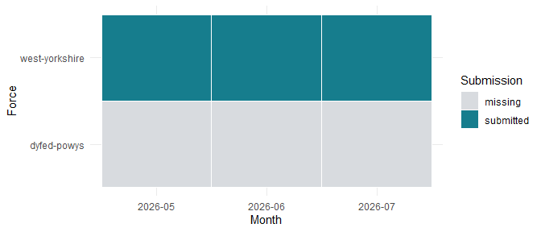

This walkthrough is precomputed from bundled public data. Viewing it, running installed examples and checking the package require no internet connection. The source archive describes search events, not unique people.
Acquire a snapshot, then choose whole files
The archive is the unit of acquisition. A rolling monthly ZIP may contain years of files. A later archive can revise an earlier force-month. Searchlight records both publisher MD5 verification and a local SHA-256 integrity manifest. The latter detects later changes; it is not a publisher signature.
The following acquisition code is displayed but never run during a package check:
cache <- sl_cache_dir()
months <- c("2026-05", "2026-06", "2026-07")
forces <- c("west-yorkshire", "dyfed-powys")
sl_archive_download(months, forces = forces, dir = cache)
versions <- sl_archive_snapshot(cache, months = months, forces = forces)
versions <- sl_select_version(versions, rule = "latest")
records <- sl_read_records(cache, versions)No function deduplicates individual searches across archive versions. It selects one entire CSV per force-month and retains the alternatives. Even identical event rows can represent distinct reported searches. Original CSV bytes remain intact.
The bundled sample permits the same selection and parsing steps offline:
sample_dir <- data_file("sample")
versions <- sl_select_version(sl_list_versions(sample_dir))
knitr::kable(versions[c("force_id", "month", "n_records", "selection_rule")])| force_id | month | n_records | selection_rule |
|---|---|---|---|
| west-yorkshire | 2026-05 | 1659 | latest |
| west-yorkshire | 2026-06 | 1466 | latest |
| west-yorkshire | 2026-07 | 1532 | latest |
parsed <- sl_read_records(sample_dir, versions[1, ])
knitr::kable(summary(sl_contract(parsed))[c("force_id", "month", "status", "n_records")])| force_id | month | status | n_records |
|---|---|---|---|
| west-yorkshire | 2026-05 | submitted | 1659 |
| dyfed-powys | 2026-05 | missing | NA |
| west-yorkshire | 2026-06 | missing | NA |
| dyfed-powys | 2026-06 | missing | NA |
| west-yorkshire | 2026-07 | missing | NA |
| dyfed-powys | 2026-07 | missing | NA |
The filename defines the submission month. Parsed instants display London time, including British summer time. Conversion of a late-month UTC timestamp can cross into the next calendar month; this is flagged without moving it to a different source submission. Raw timestamp and ethnicity strings remain available.
Coverage comes before comparison
The requested sample is May-July 2026 for West Yorkshire and Dyfed-Powys. The latter has no source file in these three months; it remains in the audit.
coverage <- sl_coverage(x)
knitr::kable(coverage[c("force_id", "month", "status", "n_records")])| force_id | month | status | n_records |
|---|---|---|---|
| dyfed-powys | 2026-05 | missing | NA |
| dyfed-powys | 2026-06 | missing | NA |
| dyfed-powys | 2026-07 | missing | NA |
| west-yorkshire | 2026-05 | submitted | 1659 |
| west-yorkshire | 2026-06 | submitted | 1466 |
| west-yorkshire | 2026-07 | submitted | 1532 |
plot(coverage)
Missing is unavailable, not zero. A submitted zero-row file is distinguishable from an absent file. A suspected partial submission remains flagged, and reported events are not inflated to estimate the missing events. Revisions describe whole-file changes and never trigger row-level deduplication.
Filtering events preserves source coverage. The contract’s scope records the visible rows; rates must explicitly select the force/month analysis window.
subset <- x[x$ethnicity_5 == "Black", ]
c(source_events = nrow(x), visible_black_events = nrow(subset),
source_force_months = nrow(sl_contract(subset)$coverage))
#> source_events visible_black_events source_force_months
#> 4657 58 6Attach geography locally
After download, coordinates can be joined to any suitable ONS boundary without reacquiring events. Searchlight uses British National Grid for spatial assignment and distances. It reuses exact coordinate calculations while preserving every event and its contribution to quality summaries.
knitr::kable(sl_contract(x)$assignment_quality, digits = 3)| type | missing_coordinate_share | unassigned_share | boundary_sensitive_share | ambiguous_share | threshold_m |
|---|---|---|---|---|---|
| lsoa21 | 0.035 | 0.038 | 0.493 | 0 | 50 |
| msoa21 | 0.035 | 0.038 | 0.244 | 0 | 50 |
These are anonymised street-level snap points. Near-boundary locations can be systematically misassigned; distance is a sensitivity diagnostic, not a correction. Records without coordinates remain unassigned and are counted. Shared-edge ties use the first geography code and remain flagged as ambiguous. The boundary-sensitive share uses assigned events with measured distances; missing-coordinate and unassigned shares use all supplied events.
The sample uses original ONS BGC polygons for assignment and separately simplified polygons for compact mapping. It retains whole Census units within the two force areas, so a clipped fragment never receives an entire unit’s population.
Inspect timestamp quality and exposures
times <- sl_timestamp_quality(x)
knitr::kable(times[c("force_id", "month", "source_midnight_share",
"midnight_share", "time_reliable")], digits = 3)| force_id | month | source_midnight_share | midnight_share | time_reliable |
|---|---|---|---|---|
| dyfed-powys | 2026-05 | NA | NA | FALSE |
| dyfed-powys | 2026-06 | NA | NA | FALSE |
| dyfed-powys | 2026-07 | NA | NA | FALSE |
| west-yorkshire | 2026-05 | 0.010 | 0.010 | TRUE |
| west-yorkshire | 2026-06 | 0.010 | 0.008 | TRUE |
| west-yorkshire | 2026-07 | 0.014 | 0.011 | TRUE |
Midnight heaping is checked in both the original clock string and London time. Passing this screen does not prove timestamps are accurate. The darkness model excludes force-months that fail or lack the screen, retaining an exclusion table.
Census TS021 supplies marginal ethnicity populations; RM032 supplies age/sex cross-tabs. The package matches stable classification codes and carries source metadata. Self-defined and officer-defined ethnicity are never silently merged. An exposure is a denominator choice, not a count of people actually available to be searched at the recorded location and time.
Export a reviewable report
rates <- readRDS(data_file("example-rates.rds"))
counts <- readRDS(data_file("example-counts.rds"))
population <- readRDS(data_file("sample-population.rds"))$msoa21
estimates <- list(
ratios = sl_rate_ratio(rates),
missing_ethnicity = sl_missing_ethnicity_bounds(counts, population)
)
report_file <- tempfile(fileext = ".html")
sl_report(x, report_file, estimates,
limitations = "Rate examples cover four West Yorkshire MSOAs, not the whole sample.")
file.exists(report_file)
#> [1] TRUEThe HTML report contains coverage, quality, sources, result-specific scope and limitations. It keeps sampling uncertainty separate from assumption ranges and requires no web assets or Pandoc. It displays supplied results; it does not fit new models during rendering. Existing files require explicit overwrite permission.
Continue with vignette("estimating-disparity") for rates
and sensitivity, vignette("spatial-simulation") for
replicated spatial evidence, and
vignette("outcomes-and-darkness") for the outcome and
darkness designs.
Sources: data.police.uk archive,
field documentation, ONS Open Geography, and
NOMIS. See the installed
NOTES/data_sources.md for verified endpoints, vintages and
table identifiers.